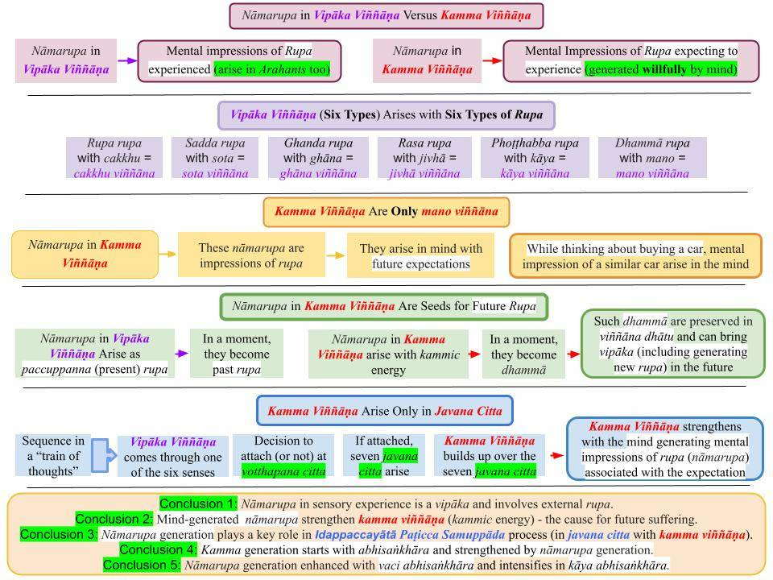
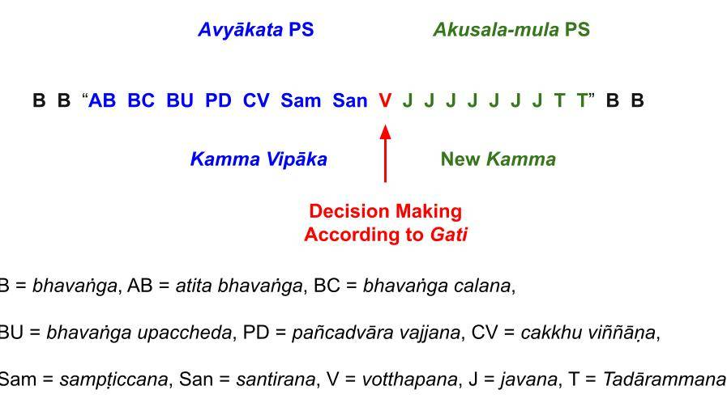

"Nāmarupa" associated with Idappaccayātā Paṭicca Samuppāda are "mental impressions of rupa" created by the mind in javana citta with avijjā, abhisaṅkhāra, and kamma viññāṇa.
April 16, 2023; Chart revised April 20, 2023

Download/Print: “10. Nāmarupa in Vipāka Versus Kamma Viññāṇa“
One Type of Nāmarupa Arise in a Sensory Event (i.e., in Vipāka Viññāṇa)
1. When we see a figure, we can immediately identify that person as John, Jane, etc. Here, "nāma" and "rupa" in "nāmarupa" consists of the name of the person and their physical body.
- These are vipāka viññāṇa, and they come through the six senses as sensory inputs (ārammaṇa): eyes, ears, nose, tongue, body, and mind. Thus, a vipāka viññāṇa can be cakkhu, sota, ghāna, jivhā, kāya, or mano viññāṇa.
- In another example, when we hear a song, we can assign a "name (nāma)" to the song (if we have heard it before); the sound itself is the "sadda rupa."
- We discussed this type of nāmarupa in the previous post, "Nāmarupa in Vipāka Viññāṇa."
A Different Type of Nāmarupa Arise in Our Response to a Vipāka Viññāṇa
2. The response to a sensory input arises in mind only as mano viññāṇa.
- If the mind attaches to that sensory input (ārammaṇa) via greed, anger, or ignorance, then the mind establishes an expectation for future action with kamma viññāṇa (which arises in mind as mano viññāṇa.)
- With that expectation, kamma accumulation starts with a Paṭicca Samuppāda (PS) process that describes "bhava" and "jāti" within a lifetime. It is Idappaccayātā PS. I have discussed it in Refs. 1 and 2.
- Let us briefly discuss a different type of nāmarupa that arise in that Idappaccayātā PS.
Example of Nāmarupa In Idappaccayātā Paṭicca Samuppāda
3. Suppose you need to buy a car and see an appealing car parked on the street. You may instinctively say to yourself, "This is the car I like to buy, but not this color." Then an impression of that car -- in the color you like -- arises in your mind. That "mental impression of the desired car" is a nāmarupa created in your mind in your javana citta! Such nāmarupa are also associated with vaci abhisaṅkhāra.
- Even though you may have had a vague idea of buying a car, now you have established a kamma viññāṇa (an expectation) of buying a particular car. Every time you see a car similar to the one you have in mind, you think a bit more about buying the car with more abhisaṅkhāra and kamma viññāṇa arising in your mind.
- Even though you may not realize it, there is a kammic energy created in each of the javana cittās associated with such kamma viññāṇa.
- That energy will stay in viññāṇa dhātu as an expectation (Ref. 3) until you either buy that car or give up that expectation if you realize that you don't have enough money to buy it.
4. Some expectations give rise to intense "kammic energies," and others may not have any residual effect to bring vipaka at later times. Even Arahants generate expectations for daily activities, but those only get those "tasks done." No kammic energies are created with such actions.
- On the other hand, expectations that arise with lobha, dosa, and moha (or mundane versions of alobha, adosa, and amoha) generate kammic energies that remain in viññāṇa dhātu and can bring vipaka in the future (Ref. 3.)
- Those kammic energies are referred to as "kamma bija" or "dhammā," depending on the context (Ref. 4.)
Kammic Energy Accumulation Happens with Kamma Viññāṇa
5. Kammic energy accumulation occurs ONLY in javana cittās with lobha, dosa, and moha (or mundane versions of alobha, adosa, and amoha), as mentioned in #4 above.
- The worst defilements of lobha, dosa, and moha COULD arise if one has not even begun to grasp the Four Noble Truths/Paṭicca Samuppāda/Tilakkhana. Then, if the sensory input is strong enough (e.g., a hefty bribe), one could engage in highly immoral deeds that will generate potent kammic energy to "power up" existence in an apāya. The "javana power" involved in such cittās is very high. In many such heinous crimes (killing, for example), energy from that javana power can also make visible changes to one's body. The face becomes dark and brutal to look at, and the body may start shaking.
- On the other hand, javana power in mundane versions of alobha, adosa, and amoha can lead to a pleasant face, and one's demeanor becomes calm. Such kammic energies lead to rebirths in the "good realms" with much less suffering. In the highest Deva realms, for example, there is hardly any suffering during life. However, if one had not attained at least the Sotapanna Anugāmi stage, one would have all four types of anusaya left, and thus future rebirths in apāyās remain a possibility.
Is It "Me" Attaching to an Ārammaṇa?
6. This is a critical issue to think about. We will discuss this in more detail later; I don't want to emphasize it here. But think about the following.
- We FEEL that a sensory experience (seeing a person, for example) happens "in one shot." It feels as if I see person X in one look at X.
- However, the Buddha described the sensory experience of a living being (not just humans) as a mechanical process.
- "Seeing a person" happens in a series of discrete events that takes place so rapidly that we are fooled into thinking it happens in "one shot."
- That is why the Buddha called viññāṇa a magician. See "Pheṇapiṇḍūpama Sutta (SN 22.95)."
Vipāka Viññāṇa to a Kamma Viññāṇa - Basic Process
7. I have discussed this process in Ref. 5. The following is a figure from that post. It is not necessary to fully understand the terms in the figure. I will explain them in detail in future posts.

8. The essential points are the following.
- A "citta vithi" or a "stream of cittās" with 17 cittās starts with the AB citta when a sensory input (a cakkhu viññāṇa in this case) comes to mind.
- The first seven cittās analyze and accept the sensory input. At the eighth citta (V), the mind automatically decides (without conscious thinking) how to act on that sensory input. Seven javana cittās flow ONLY IF the mind decides to "take action" with lobha, dosa, and moha (or mundane versions of alobha, adosa, and amoha.) That decision is based on one's gati at that time.
- Understanding the sensory input and taking preliminary action may take a few seconds. Hundreds of such citta vithi may flow through the mind in a split-second. We experience only their cumulative effect, not each citta vithi.
- We become aware of our actions AFTER the mind starts to take action. That is why it is critical "to be mindful." If we realize that we are taking an unwise action, we must immediately stop that action. "Being mindful" requires an effort, and that is what is involved in Ānāpānasati (and Satipaṭṭhāna) Bhāvanā. See Ref. 6.
Kamma Accumulation In Javana Citta with Abhisaṅkhāra and Nāmarupa Generation
9. Kamma accumulation happens throughout our lives, even moment-to-moment. Some are trivial, and others can bring future rebirths in an apāya by even an action that takes only moments. For example, we have heard about people being shot in "road rage" situations or even in arguments among family members.
- A brief description of such moment-to-moment kamma accumulation (via Idappaccayātā Paṭicca Samuppāda) is described in Ref. 1, and an extensive discussion is in Ref. 2. Both those did not have an analysis based on citta vithi. I only briefly introduced that in #7 and #8 above. Buddha Dhamma is profound, and I will take an incremental approach to introduce these more profound concepts.
- Kammic energies accumulated via numerous Idappaccayātā PS processes bring rebirths via Upapatti PS, as described in Ref. 7.
- Nāmarupa formation in both types of Paṭicca Samuppāda is described, with examples, in Ref. 8. It is a good idea to read that to understand nāmarupa formation.
- In all these situations, both abhisaṅkhāra and nāmarupa formations with kamma viññāṇa play critical roles.
It Is Dangerous to Translate the Terms in Paṭicca Samuppāda Directly
10. In the next post, we will discuss the nāmarupa formation involved in the Upapatti PS and how that leads to yet another type of nāmarupa formation to result in a "person with a physical body."
- I have purposely tried to make this post short. It has a lot of information because it takes a lot of background material to understand fully.
- Those who have read the website for a long time (and thus have read various posts on different topics) may have a good idea.
- Learning Buddha Dhamma is a never-ending process. As you can see, I keep revising posts as I gain more understanding. The hardest part is to get hold of a fundamental concept that convinces oneself of the value of Buddha Dhamma. Then one can start building on that.
11. Many people are afraid even to look at Pāli verses. But it is necessary to get an understanding of words like "viññāṇa" and "nāmarupa" (all 11 terms in PS) and use the Pāli words with that understanding. Those words have multiple meanings depending on the context and should NEVER be translated into English, for example, as "consciousness" and "name and form."
- For example, “avijjā paccayā saṅkhāra" in the uddesa (summary) form in the "Paṭiccasamuppāda Sutta (SN 12.1)" should NEVER be translated as "Ignorance is a condition for choices."
- In the niddesa (utterance) in the "Vibhaṅga Sutta (SN 12.2)," saṅkhāra is a bit more explained: "Tayome, bhikkhave, saṅkhārā—kāyasaṅkhāro, vacīsaṅkhāro, cittasaṅkhāro."
- However, even that is not enough to get the meaning in the context of Paṭicca Samuppāda. Detailed explanations (paṭiniddesa) of “avijjā paccayā saṅkhāra" are scattered in various suttas. A better, but still not comprehensive, explanation is in the "Cūḷavedalla Sutta (MN 44)." I have linked to the correct marker where the explanation of saṅkhāra (in the context of PS) starts.
- “Paṭiccasamuppāda Vibhaṅga” explains the step “avijjā paccayā saṅkhāra” as, “Tattha katame avijjā paccayā saṅkhārā? Puññābhisaṅkhāro, apuññābhisaṅkhāro, āneñjābhisaṅkhāro.”
- All the above explanations are correct and need to be understood. However, until one understands the final version of the “Paṭiccasamuppāda Vibhaṅga,” one's understanding of “avijjā paccayā saṅkhāra” is not complete. Some people complain that I write too many posts. But all I am trying to do is to break up this vast analysis into understandable pieces. See, for example, "Mental Aggregates" for several posts on saṅkhāra and other terms.
All posts in "Buddhism – In Charts."
References
1. "Idappaccayātā Paṭicca Samuppāda"
2. "Paṭicca Samuppāda During a Lifetime."
3. "Six Root Causes – Loka Samudaya (Arising of Suffering) and Loka Nirodhaya (Nibbāna)."
4. "Where Are Memories Stored? – Viññāṇa Dhātu," "Dhammā, Kamma, Saṅkhāra, Mind – Critical Connections," "Kamma Viññāṇa – Link Between Mind and Matter" and "Viññāṇa – Two Critical Meanings."
5. "Avyākata Paṭicca Samuppāda for Vipāka Viññāṇa."
6. "9. Key to Ānapānasati – How to Change Habits and Character (Gati)."
7. "Akusala-Mūla Upapatti Paṭicca Samuppāda."
8. "Viññāna Paccayā Nāmarūpa."
O "Nāmarupa" associado ao Idappaccayātā Paṭicca Samuppāda consiste em "impressões mentais de rupa" criadas pela mente no Javana citta, em conjunto com Avijjā, Abhisaṅkhāra e Kamma Viññāṇa.
16 de abril de 2023; Gráfico revisado em 20 de abril de 2023
Baixar/Imprimir: “10. Nāmarupa em Vipāka versus Kamma Viññāṇa“
Um tipo de Nāmarupa surge em um evento sensorial (ou seja, em Vipāka Viññāṇa)
1. Quando vemos uma figura, podemos identificar imediatamente essa pessoa como João, Maria, etc. Aqui, “Nāma” e “Rūpa” em “nāmarupa” consistem no nome da pessoa e em seu corpo físico.
- Esses são Vipāka Viññāṇa, e eles chegam através dos seis sentidos como entradas sensoriais (Ārammaṇa): olhos, ouvidos, nariz, língua, corpo e mente. Assim, um Vipāka Viññāṇa pode ser Cakkhu Viññāṇa, Sota Viññāṇa, Ghāna Viññāṇa, Jivhā Viññāṇa, Kāya Viññāṇa ou Mano Viññāṇa.
- Em outro exemplo, quando ouvimos uma música, podemos atribuir um “Nāma” à música (se já a tivéssemos ouvido antes); o som em si é o “sadda Rūpa”.
- Discutimos esse tipo de nāmarupa na postagem anterior, “Nāmarupa no Vipāka Viññāṇa”.
Um Tipo Diferente de Nāmarupa Surge em Nossa Resposta a um Vipāka Viññāṇa
2. A resposta a um estímulo sensorial surge na mente apenas como Mano Viññāṇa.
- Se a mente se apega a esse estímulo sensorial (Ārammaṇa) por meio da ganância, da raiva ou da ignorância, então a mente estabelece uma expectativa para uma ação futura com Kamma Viññāṇa (que surge na mente como Mano Viññāṇa).
- Com essa expectativa, o acúmulo de kamma começa com um processo de Paṭicca Samuppāda (PS) que descreve “Bhava” e “Jāti” dentro de uma vida. Trata-se do Idappaccayātā PS. Discuti isso nas Referências 1 e 2.
- Vamos discutir brevemente um tipo diferente de nāmarupa que surge nesse Idappaccayātā PS.
Exemplo de Nāmarupa no Idappaccayātā Paṭicca Samuppāda
3. Suponha que você precise comprar um carro e veja um carro atraente estacionado na rua. Você pode instintivamente dizer a si mesmo: “Este é o carro que eu gostaria de comprar, mas não nesta cor”. Então, uma impressão desse carro — na cor que você gosta — surge em sua mente. Essa “impressão mental do carro desejado” é um nāmarupa criado em sua mente em seu Javana Citta! Tais nāmarupa também estão associados ao vaci Abhisaṅkhāra.
- Mesmo que você tivesse uma vaga ideia de comprar um carro, agora você estabeleceu um kamma viññāṇa (uma expectativa) de comprar um carro específico. Toda vez que você vê um carro semelhante ao que tem em mente, você pensa um pouco mais em comprá-lo, com mais Abhisaṅkhāra e kamma viññāṇa surgindo em sua mente.
- Mesmo que você não perceba, há uma energia Kamma criada em cada um dos Javana cittās associados a tal Viññāṇa.
- Essa energia permanecerá no Viññāṇa Dhātu como uma expectativa (Ref. 3) até que você compre aquele carro ou desista dessa expectativa, caso perceba que não tem dinheiro suficiente para comprá-lo.
4. Algumas expectativas dão origem a intensas “energias de Kamma”, e outras podem não ter nenhum efeito residual para trazer vipaka em momentos posteriores. Até mesmo os Arahants geram expectativas para as atividades diárias, mas essas apenas servem para “realizar essas tarefas”. Nenhuma energia de Kamma é criada com tais ações.
- Por outro lado, as expectativas que surgem com Lobha, Dosa e Moha (ou versões mundanas de Alobha, Adosa e Amoha) geram energias Kamma que permanecem no Viññāṇa Dhātu e podem trazer vipaka no futuro (Ref. 3.)
- Essas energias Kamma são chamadas de “kamma bija” ou “Dhammā”, dependendo do contexto (Ref. 4.)
O acúmulo de energia Kamma ocorre com Viññāṇa
5. O acúmulo de energia Kamma ocorre APENAS em Javana cittās com Lobha, Dosa e Moha (ou versões mundanas de Alobha, Adosa e Amoha), conforme mencionado no item 4 acima.
- As piores impurezas de Lobha, Dosa e Moha PODEM surgir se a pessoa ainda nem começou a compreender as Quatro Nobres Verdades/Paṭicca Samuppāda/Tilakkhaṇa. Então, se o estímulo sensorial for forte o suficiente (por exemplo, um suborno substancial), a pessoa pode se envolver em atos altamente imorais que gerarão energia Kamma potente para “alimentar” a existência em um Apāya. O “poder Javana” envolvido em tais cittās é muito alto. Em muitos desses crimes hediondos (matar, por exemplo), a energia desse poder Javana também pode causar mudanças visíveis no corpo. O rosto fica sombrio e de aparência brutal, e o corpo pode começar a tremer.
- Por outro lado, o poder Javana nas versões mundanas de Alobha, Adosa e Amoha pode levar a um rosto agradável, e o comportamento da pessoa torna-se calmo. Tais energias Kamma levam a renascimentos nos “reinos bons”, com muito menos sofrimento. Nos reinos Deva mais elevados, por exemplo, quase não há sofrimento durante a vida. No entanto, se a pessoa não tivesse alcançado pelo menos o estágio de Sotāpanna Anugāmi, teria todos os quatro tipos de Anusaya restantes e, assim, renascimentos futuros em apāyās continuariam sendo uma possibilidade.
É “eu” que me apego a um Ārammaṇa?
6. Esta é uma questão crítica a ser considerada. Discutiremos isso com mais detalhes posteriormente; não quero enfatizá-la aqui. Mas reflita sobre o seguinte.
- Nós SENTIMOS que uma experiência sensorial (ver uma pessoa, por exemplo) acontece “de uma só vez”. Parece que vejo a pessoa X com um único olhar para X.
- No entanto, o Buddha descreveu a experiência sensorial de um ser vivo (não apenas humanos) como um processo mecânico.
- “Ver uma pessoa” acontece em uma série de eventos discretos que ocorrem tão rapidamente que somos levados a pensar que isso acontece “de uma só vez”.
- É por isso que o Buddha chamou Viññāṇa de mágico. Veja “Pheṇapiṇḍūpama Sutta (SN 22.95)”.
Vipāka Viññāṇa para um Kamma Viññāṇa — Processo Básico
7. Discuti esse processo na Ref. 5. A seguir, uma figura retirada daquele ensaio. Não é necessário compreender totalmente os termos da figura. Irei explicá-los em detalhes em ensaios futuros.
8. Os pontos essenciais são os seguintes.
- Um “citta vithi” ou um “fluxo de cittās” com 17cittās começa com o citta AB quando um estímulo sensorial (um Cakkhu Viññāṇa, neste caso) surge na mente.
- Os primeiros sete Cittas analisam e aceitam o estímulo sensorial. No oitavo Citta (V), a mente decide automaticamente (sem pensamento consciente) como agir diante desse estímulo sensorial. Sete javana cittās fluem SOMENTE SE a mente decidir “agir” com Lobha, Dosa e Moha (ou versões mundanas de Alobha, Adosa e Amoha). Essa decisão é baseada na Gati da pessoa naquele momento.
- Compreender o estímulo sensorial e tomar uma ação preliminar pode levar alguns segundos. Centenas desses Citta vithi podem fluir pela mente em uma fração de segundo. Experimentamos apenas seu efeito cumulativo, não cada Citta vithi.
- Tornamo-nos conscientes de nossas ações DEPOIS que a mente começa a agir. É por isso que é fundamental “estar atento”. Se percebermos que estamos realizando uma ação imprudente, devemos interromper imediatamente essa ação. “Estar atento” requer um esforço, e é isso que está envolvido no Ānāpānasati (e Satipaṭṭhāna) Bhāvanā. Ver Ref. 6.
Acúmulo de kamma no Javana Citta com geração de Abhisaṅkhāra e Nāmarupa
9. O acúmulo de Kamma ocorre ao longo de nossas vidas, até mesmo a cada momento. Alguns são triviais, e outros podem levar a renascimentos futuros em um Apāya, mesmo por uma ação que leva apenas alguns instantes. Por exemplo, já ouvimos falar de pessoas que foram baleadas em situações de “raiva no trânsito” ou mesmo em discussões entre membros da família.
- Uma breve descrição desse acúmulo de Kamma momento a momento (por meio de Idappaccayātā Paṭicca Samuppāda) é apresentada na Ref. 1, e uma discussão mais extensa encontra-se na Ref. 2. Ambas não apresentavam uma análise baseada em citta vithi. Eu apenas introduzi isso brevemente nos itens 7 e 8 acima. O Buddha Dhamma é profundo, e adotarei uma abordagem gradual para apresentar esses conceitos mais profundos.
- As energias de Kamma acumuladas por meio de numerosos processos de Idappaccayātā PS trazem renascimentos por meio de Upapatti PS, conforme descrito na Ref. 7.
- A formação de nāmarupa em ambos os tipos de Paṭicca Samuppāda é descrita, com exemplos, na Ref. 8. É uma boa ideia ler isso para compreender a formação de nāmarupa.
- Em todas essas situações, tanto as formações de Abhisaṅkhāra quanto as de nāmarupa, juntamente com Viññāṇa, desempenham papéis críticos.
É perigoso traduzir diretamente os termos em Paṭicca Samuppāda
10. No próximo ensaio, discutiremos a formação de nāmarupa envolvida no Upapatti PS e como isso leva a mais um tipo de formação de nāmarupa, resultando em uma “pessoa com um corpo físico”.
- Tentei propositalmente fazer este ensaio curto. Ele contém muitas informações, pois é necessário bastante material de base para compreendê-lo plenamente.
- Aqueles que acompanham o site há muito tempo (e, portanto, leram vários ensaios sobre diferentes tópicos) podem ter uma boa noção.
- Aprender Buddha Dhamma é um processo sem fim. Como você pode ver, continuo revisando os ensaios à medida que ganho mais compreensão. A parte mais difícil é compreender um conceito fundamental que nos convença do valor do Buddha Dhamma. Então, podemos começar a construir a partir daí.
11. Muitas pessoas têm medo até mesmo de olhar para os versos em Pālī. Mas é necessário compreender palavras como “Viññāṇa” e “nāmarupa” (todos os 11 termos no PS) e usar as palavras em Pālī com essa compreensão. Essas palavras têm múltiplos significados dependendo do contexto e NUNCA devem ser traduzidas para o inglês, por exemplo, como “consciência” e “nome e forma”.
- Por exemplo, “Avijjā Paccayā Saṅkhāra” na forma uddesa (resumo) no “Paṭiccasamuppāda Sutta (SN 12.1)” NUNCA deve ser traduzido como “A ignorância é uma condição para as escolhas”.
- No niddesa (enunciado) do “Vibhaṅga Sutta (SN 12.2)”, saṅkhārā é um pouco mais explicado: “Tayome, bhikkhave, saṅkhārā—kāyasaṅkhāro, vacīsaṅkhāro, cittasaṅkhāro.”
- No entanto, mesmo isso não é suficiente para compreender o significado no contexto do Paṭicca Samuppāda. Explicações detalhadas (paṭiniddesa) de “Avijjā Paccayā Saṅkhāra” estão espalhadas por várias Suttā. Uma explicação melhor, mas ainda não exaustiva, encontra-se no “Cūḷavedalla Sutta (MN 44)”. Incluí um link para o marcador correto onde começa a explicação de Saṅkhāra (no contexto do PS).
- “Paṭiccasamuppāda Vibhaṅga” explica la etapa “Avijjā Paccayā Saṅkhāra” como: “Tattha katame Avijjā Paccayā Saṅkhāra? Puññābhisaṅkhāro, apuññābhisaṅkhāro, āneñjābhisaṅkhāro.”
- Todas as explicações acima estão corretas e precisam ser compreendidas. No entanto, até que se compreenda a versão final do “Paṭiccasamuppāda Vibhaṅga”, a compreensão de “Avijjā Paccayā Saṅkhāra” não estará completa. Algumas pessoas reclamam que eu escrevo muitos ensaios. Mas tudo o que estou tentando fazer é dividir essa vasta análise em partes compreensíveis. Veja, por exemplo, “Agregados Mentais” para vários ensaios sobre Saṅkhāra e outros termos.
Todos os ensaios em “Buddhismo – Em Gráficos”.
Referências
1. “Idappaccayātā Paṭicca Samuppāda”
2. “Paṭicca Samuppāda durante uma vida.”
3. “Seis causas fundamentais – Loka Samudaya (origem do sofrimento) e Loka Nirodhaya (Nibbāna).”
4. “Onde as Memórias São Armazenadas? – Viññāṇa Dhātu”, “Dhammā, Kamma, Saṅkhāra, Mente – Conexões Críticas”, “Kamma Viññāṇa – Ligação entre Mente e Matéria” e “Viññāṇa – Dois Significados Críticos”.
5. “Avyākata Paṭicca Samuppāda para Vipāka Viññāṇa.”
6. “9. A chave para Ānapānasati – Como mudar hábitos e caráter (Gati).”
7. "Akusala-mūla Upapatti Paṭicca Samuppāda."
8. "Viññāna Paccayā Nāmarūpa."